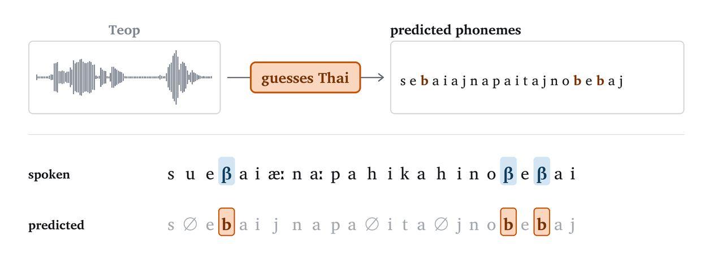

Phoneme-level speech models transcribe speech into phonemes (the individual sounds that make up words, like the [ɹ] in red), or generate speech from them. They often fail when the input mixes two languages (code-switching) or is in a language the model never saw in training. We trace both failures to one pattern, phonological interference: the model guesses, from the whole input, one language it knows, and imposes that language's sounds on all of it. The videos below show this in a phone recognizer and a text-to-speech model.
Inside the model, this guess is in a small subspace of its activations. We fix interference with windowed language estimation (WLE): at each position, we replace only that subspace with the model's own guess from a short window around it. It needs no language labels and no retraining, and works for phone recognizers and text-to-speech models alike.
Hearing French first, the model writes the English the score with French sounds. With WLE, it writes the English sounds.
After French, the English r in score becomes a French r. Before English, the Italian r in storia becomes an English r. With WLE, each language keeps its own r.
Some phonemes exist in only one of the two languages: English has [ɹ], French does not. We call these phonemes unshared. A model loses one when it deletes it or writes a phoneme of the other language in its place, as in the pairs below. Recall is the share of unshared phonemes a model keeps.
We find that interference also happens in languages the recognizers were not trained on. On 43 unseen languages, the more confident a recognizer is that a recording is in one of its training languages, the more it loses the phonemes that language lacks.

We train a simple linear classifier (a probe) on each model's hidden states to score each of 16 languages at every frame; we call this the model's language estimate. When the other language is present, the estimate for a span's own language drops, although the span's audio is unchanged.
This estimate is present in a low-dimensional language subspace, under 2% of each model's hidden dimensions. To test whether it causes interference, we edit the model at every position: we move the hidden state's position in this subspace to that of the average hidden state cB of another language B. When the phone recognizer transcribes an English recording, the audio stays the same and only the transcription changes. When the TTS model generates an English sentence, the speech it generates changes.
A schematic of the language subspace. Each dot is a language's average hidden state (cB above). Pick a language to steer the transcription toward it.
“It is one of the main attractions of South Africa and it is considered the flagship of South African National Parks (SANParks).”
The TTS model generates this English sentence from its IPA, once per condition.
At each position, WLE replaces the hidden state's position in the language subspace with the one the model computes from a short window around it, leaving everything else unchanged. It needs no language labels.
WLE removes 34–69% of the interference and barely changes the recognizers' accuracy on single-language speech.
Each recording mixes English with one other language. Pick a model to compare its output under SEP, TOG and WLE. The phone recognizers transcribe the original recording. The TTS model generates the sentence from its IPA instead, and the generated audio is transcribed back to IPA so all three models can be read the same way.
@misc{yanuka2026phonological,
title = {Phonological Interference in Multilingual Speech Models},
author = {Moran Yanuka and Raja Giryes and Morris Alper},
year = {2026},
eprint = {2610.11275},
archivePrefix = {arXiv},
primaryClass = {cs.CL},
url = {https://arxiv.org/abs/2610.11275}
}